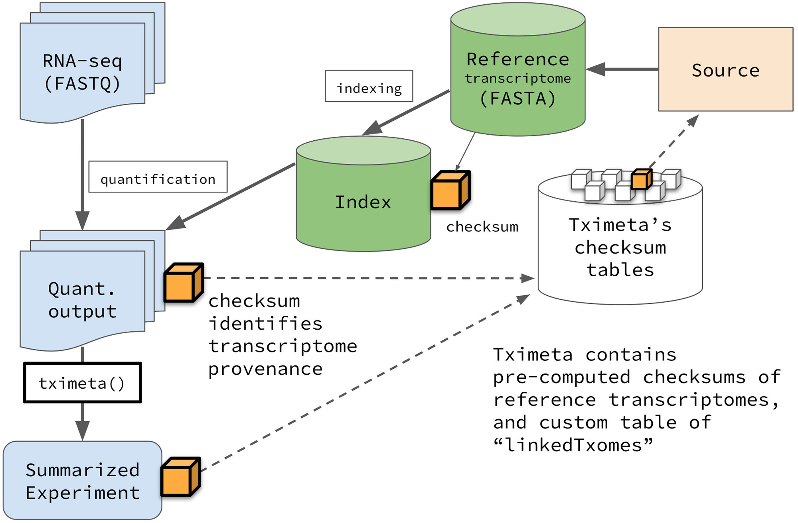
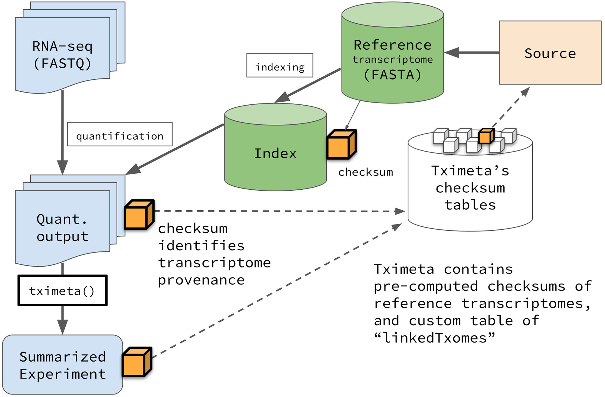

---
## What is a standard?
> A norm or specification applied to a repeated process. It includes a formal definition of terms and a description of formats and expected behavior of a system
---
## What is a standard?
> A norm or specification applied to a repeated process. It includes a formal definition of terms and a description of formats and expected behavior of a system
Standards → Interoperability
--- What happens when there is no standard (or, equivalently, too many standards) ---
---

 ---
### Existing standards in genomics
- Project metadata
- Ontologies
- File formats
- Reference genomes
- Web standards and APIs
---
### Existing standards in genomics
- Project metadata
- Ontologies
- File formats
- Reference genomes
- Web standards and APIs
Standards → Interoperability
--- ### GA4GH > The Global Alliance for Genomics and Health (GA4GH) is a policy-framing and technical standards-setting organization, seeking to enable responsible genomic data sharing within a human rights framework. - [ga4gh.org](https://www.ga4gh.org/) - formed in 2013 ---Standards → Interoperability
--- ---
---
metadata:
sample_annotation: /path/to/samples.csv
output_dir: /path/to/output/folder
sample_name, protocol, organism, data_source
frog_0h, RNA-seq, frog, /path/to/frog0.gz
frog_1h, RNA-seq, frog, /path/to/frog1.gz
frog_2h, RNA-seq, frog, /path/to/frog2.gz
frog_3h, RNA-seq, frog, /path/to/frog3.gz
| sample_name | t | protocol | organism | data_source |
| ------------- | ---- | :-------------: | -------- | ---------------------- |
| frog_0h | 0 | RNA-seq | frog | /path/to/frog0.gz |
| frog_1h | 1 | RNA-seq | frog | /path/to/frog1.gz |
| frog_2h | 2 | RNA-seq | frog | /path/to/frog2.gz |
| frog_3h | 3 | RNA-seq | frog | /path/to/frog3.gz |
Using derived attribute:
| sample_name | t | protocol | organism | data_source |
| ------------- | ---- | :-------------: | -------- | ---------------------- |
| frog_0h | 0 | RNA-seq | frog | my_samples |
| frog_1h | 1 | RNA-seq | frog | my_samples |
| frog_2h | 2 | RNA-seq | frog | my_samples |
| frog_3h | 3 | RNA-seq | frog | my_samples |
| crab_0h | 0 | RNA-seq | crab | your_samples |
| crab_3h | 3 | RNA-seq | crab | your_samples |
---
| sample_name | t | protocol | organism | data_source |
| ------------- | ---- | :-------------: | -------- | ---------------------- |
| frog_0h | 0 | RNA-seq | frog | my_samples |
| frog_1h | 1 | RNA-seq | frog | my_samples |
| frog_2h | 2 | RNA-seq | frog | my_samples |
| frog_3h | 3 | RNA-seq | frog | my_samples |
| crab_0h | 0 | RNA-seq | crab | your_samples |
| crab_3h | 3 | RNA-seq | crab | your_samples |
Project config file:
```yaml
derived_columns: [data_source]
data_sources:
my_samples: "/path/to/my/samples/{organism}_{t}h.gz"
your_samples: "/path/to/your/samples/{organism}_{t}h.gz"
```
{variable} identifies sample annotation columns
| sample_name | protocol | organism |
| ------------- | :-------------: | -------- |
| human_1 | RNA-seq | human |
| human_2 | RNA-seq | human |
| human_3 | RNA-seq | human |
| mouse_1 | RNA-seq | mouse |
| sample_name | protocol | organism | genome |
| ------------- | :-------------: | -------- | ------ |
| human_1 | RNA-seq | human | hg38 |
| human_2 | RNA-seq | human | hg38 |
| human_3 | RNA-seq | human | hg38 |
| mouse_1 | RNA-seq | mouse | mm10 |
| sample_name | protocol | organism |
| ------------- | :-------------: | -------- |
| human_1 | RNA-seq | human |
| human_2 | RNA-seq | human |
| human_3 | RNA-seq | human |
| mouse_1 | RNA-seq | mouse |
Project config file:
```yaml
implied_columns:
organism:
human:
genome: hg38
mouse:
genome: mm10
```
| sample_name | t | protocol | organism | data_source |
| ------------- | ---- | :-------------: | -------- | ---------------------- |
| frog_2h | 2 | RNA-seq | frog | my_samples |
| frog_3h | 3 | RNA-seq | frog | my_samples
Study 2:
| sample_name | t | protocol | organism | data_source |
| ------------- | ---- | :-------------: | -------- | ---------------------- |
| frog_0m | 0 | RNAseq | frog | my_samples |
| frog_60m | 60 | RNAseq | frog | my_samples |
---
### Ontologies
> A formal vocabulary and definition of concepts, entities, and their relationships.
1. Terms
2. Relations
---
## Gene Ontology
- 3 Ontologies:
- Molecular Function
- Cellular Component
- Biological Process
1. Terms: [Hexose Biosynthetic Process](http://amigo.geneontology.org/amigo/term/GO:0019319)
2. Relations: is-a, is-part-of, regulates ([Relation Ontology](https://doi.org/10.1186/gb-2005-6-5-r46))
---

---
### EDAM Ontology

---
### Sequence Ontology
Term: `open_chromatin_region`
SO Accession: `SO:0001747`
| Provider | Chr1 name | Chr1 length | Chr1 md5 | Num chroms |
|---|---|---|---|---|
| Ensembl primary | 1 | 248956422 | 2648ae1bacce4ec4b6cf337dcae37816 | 195 |
| Ensembl toplevel | 1 | 248956422 | 2648ae1bacce4ec4b6cf337dcae37816 | 649 |
| NCBI | NC_000001.11 | 248956422 | 6aef897c3d6ff0c78aff06ac189178dd | 640 |
| UCSC | chr1 | 248956422 | 2648ae1bacce4ec4b6cf337dcae37816 | 456 |
 ---
### Transcript models

---

---
---
### Transcript models

---

---